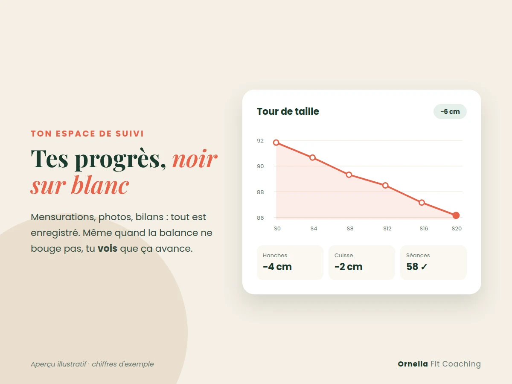
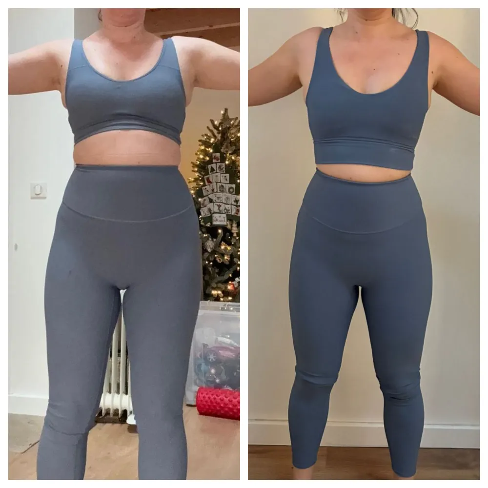
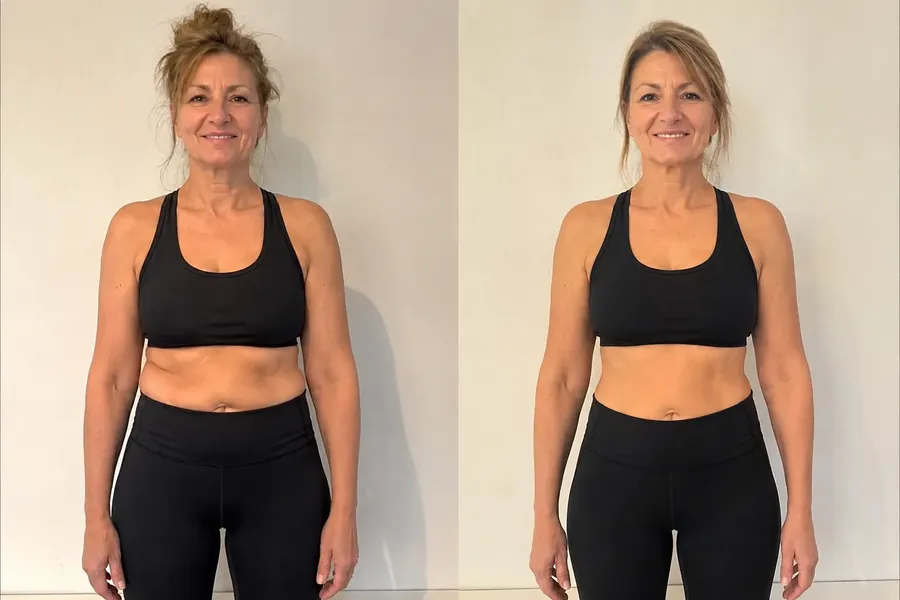

Méthode Ventre Ferme, avec Ornella
Un ventre plus plat et plus ferme, avec une coach qui vous suit chaque semaine.
12 semaines de renfo ciblé, une nutrition qui dégonfle et un vrai suivi. À distance partout en France, ou en hybride dans le 91 et le 92.
Demander mon bilan offertOrnella vous répond elle-même. Sans engagement.
Des abdos tous les soirs, des efforts à table… et le ventre ne bouge pas ?
Ce n'est pas un manque de volonté. C'est la méthode qu'on vous a donnée.
-
Les crunchs ne font pas fondre le ventre
Ils renforcent un muscle qui reste caché sous le gras. Ce qui marche : un renfo global qui fait brûler plus, et un gainage profond.
-
Manger trop peu fait gonfler
Une assiette trop vide fatigue et ballonne. Le ventre se dégonfle quand les repas sont bien construits, pas quand ils disparaissent.
-
Un programme trouvé sur Internet ne vous connaît pas
Ni votre corps, ni votre emploi du temps, ni votre grossesse. Sans ajustements, on stagne, puis on abandonne.
Ce que vous allez chercher
Un ventre moins gonflé
Souvent le premier changement qu'on remarque, grâce à la nutrition et à la régularité.
Des centimètres en moins
Votre tour de taille est mesuré toutes les 4 semaines. Les progrès se voient noir sur blanc.
Un ventre plus ferme
Un centre du corps plus fort et plus tonique, qui se tient mieux au quotidien.
12 semaines, trois étapes
Chaque étape prépare la suivante. Votre programme évolue toutes les 4 semaines, après votre bilan.
Semaines 1 à 4
Dégonfler
On installe vos séances dans votre semaine, on corrige ce qui fait gonfler dans l'assiette et on pose les bases du gainage.
Semaines 5 à 8
Raffermir
Le renfo devient plus ciblé, les charges augmentent. Premier bilan chiffré : mensurations et photos.
Semaines 9 à 12
Sculpter
On intensifie pour aller chercher les derniers centimètres, et on prépare la suite pour que les résultats restent.
Ce que vous avez chaque semaine
Des séances construites sur votre bilan
À la maison ou en salle, selon votre niveau, votre matériel et votre temps. Chaque exercice a sa vidéo de démonstration.
Un suivi sur WhatsApp
Une question, un doute sur un exercice, une semaine chargée : je vous réponds et j'adapte.
Votre espace de suivi privé
Mensurations, photos, séances et bilans au même endroit. Vous voyez vos progrès semaine après semaine.
La nutrition Boost résultats
Un plan fait pour votre vie et vos goûts, sans régime. Sur le ventre, c'est souvent ce qui fait la différence.

Votre espace de suivi : le tour de taille, mesure après mesure.
Elles l'ont fait

−9 cm de tour de taille
En 9 mois, coaching à domicile en Essonne.

−4 kg en 3 mois
Coaching sur-mesure, après des années à tourner en rond.
−10 kg en 8 mois pour une cliente suivie 100 % à distance. Voir toutes les transformations
« Elle s'adapte au niveau de chacun, prend le temps d'expliquer, de corriger, et célèbre les petites victoires. »
Charlotte C., avis Google
Pourquoi pas une appli à quelques euros ?
Les applis sont pratiques pour bouger. Pour changer votre ventre, il leur manque l'essentiel.
Le programme
✕Le même pour tout le monde
✓Construit sur votre bilan, ajusté toutes les 4 semaines
Votre technique
✕Personne ne la regarde
✓Une coach qui vous corrige
Quand vous décrochez
✕Personne ne s'en rend compte
✓Je vous relance et j'adapte la semaine
L'alimentation
✕Des menus standards
✓Un plan fait pour votre vie, sans régime

Je suis Ornella
Coach sportive diplômée d'État, ancienne compétitrice en fitness, et maman. Après ma grossesse, j'ai moi aussi dû retrouver mon ventre.
Je sais ce que c'est de manquer de temps, d'énergie, et de ne pas savoir par où commencer. Mon travail : vous donner la bonne méthode, et rester à côté de vous jusqu'au résultat.
Trois façons de suivre la méthode
À domicile ou en salle
dès 260 € /moisEssonne et villes proches du 92
Je viens à vous chaque semaine, matériel inclus, ou on s'entraîne ensemble en salle On Air.
Hybride
dès 149 € /moisEssonne et villes proches du 92
Des séances avec moi chaque mois, votre programme pour les autres jours et le suivi WhatsApp.
À distance
dès 89 € /moisPartout en France
Votre programme sur-mesure, le suivi WhatsApp et un bilan toutes les 4 semaines.
Parcours de 3 mois, engagement souple. Pendant le bilan offert, on choisit ensemble la formule qui vous convient. Voir le détail des formules
Vos questions
Je débute (ou je reprends après longtemps), c'est pour moi ?
Oui. Tout part de votre bilan : votre niveau, vos douleurs éventuelles, votre emploi du temps. Les premières semaines servent justement à installer les bases, sans vous épuiser.
J'ai accouché il y a quelques mois ?
C'est un objectif que je connais bien, je l'ai vécu. On démarre après le feu vert de votre médecin ou de votre sage-femme, et le programme est adapté à cette période.
Combien de temps faut-il par semaine ?
On le décide ensemble pendant le bilan, selon votre vie réelle. Le programme s'adapte à votre emploi du temps, pas l'inverse.
Quel matériel faut-il ?
À la maison, on part de ce que vous avez ; je vous dis s'il manque quelque chose. En salle ou à domicile avec moi, le matériel est prévu.
Pourquoi 12 semaines ?
Parce qu'un mois ne suffit pas pour un vrai changement sur le ventre. Trois mois, c'est le temps d'installer une routine et de voir des résultats qui restent. Ce n'est pas pour vous bloquer : c'est pour que vous obteniez ce pour quoi vous venez.
Je n'habite pas en Essonne ?
La formule à distance fonctionne partout en France : même méthode, même suivi, avec un bilan toutes les 4 semaines.
Votre bilan offert
Deux réponses et votre message est prêt. On fait le point au téléphone (15 min) ou directement par messages, comme vous préférez.
Votre objectif principal
Vous habitez
Ornella vous répond personnellement, sans engagement.